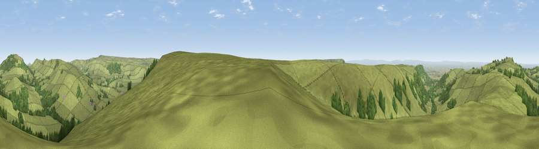

Viewpoint near Chop Gate
#6334 in England · top 21% of its area beats it · near Chop GateThe view, rendered

A 360° render of this exact spot computed from the terrain model, tree cover and land cover — summer colours, afternoon light, calibrated against photographs of famous viewpoints. Real trees, hedges and buildings will differ in detail.
The panorama
Grey silhouette: terrain skyline in each direction (720 bearings, Earth curvature and refraction included). Dashed green: skyline with trees (+15 m) and buildings (+8 m) as obstacles. Blue strip: how far the ground is visible on each bearing.
Where the view opens
Wedge length = distance to the farthest visible ground on that bearing (vegetation-aware). Rings at 10, 25 and 50 km.
What fills the view
86% grassland · 12% woodland · 2% cropland
Angular shares of the visible panorama (visual magnitude), not map area. Landscape diversity 0.21 (0–1 Shannon).
Key numbers
More beautiful places nearby
The staircase of upgrades: each row has a higher view potential than everything closer. Driving times are estimates from straight-line distance, calibrated against real road routing — check an actual route before setting out.
| Place | Direction | Drive | Score |
|---|---|---|---|
| Carlton Bank | NNW · 4 km | ~8 min | 85.1 |
| Roseberry Topping | NNE · 14 km | ~26 min | 85.8 |
| Viewpoint near Lazenby | NNE · 19 km | ~33 min | 86.4 |
| Warsett Hill | NE · 27 km | ~44 min | 86.8 |
| Viewpoint near Easington | NE · 30 km | ~46 min | 90.2 |
| The Knoll | SSW · 423 km | ~400 min | 91.0 |
54.38575, -1.18348 · source: screening · position refined by local search. Computed location — check access rights before visiting.